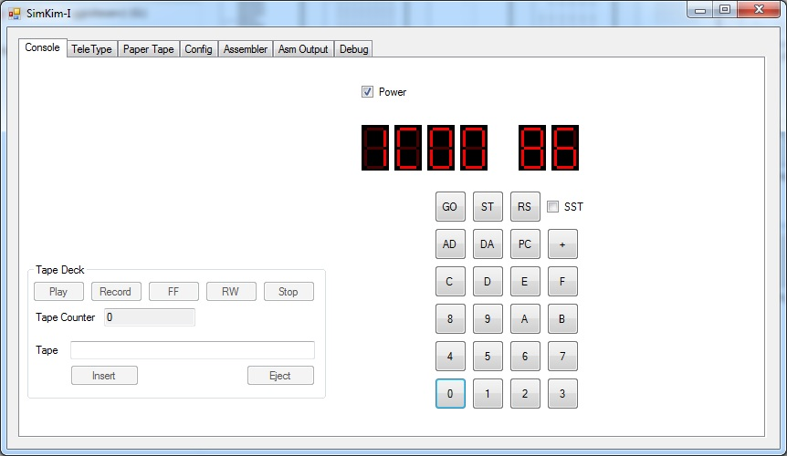
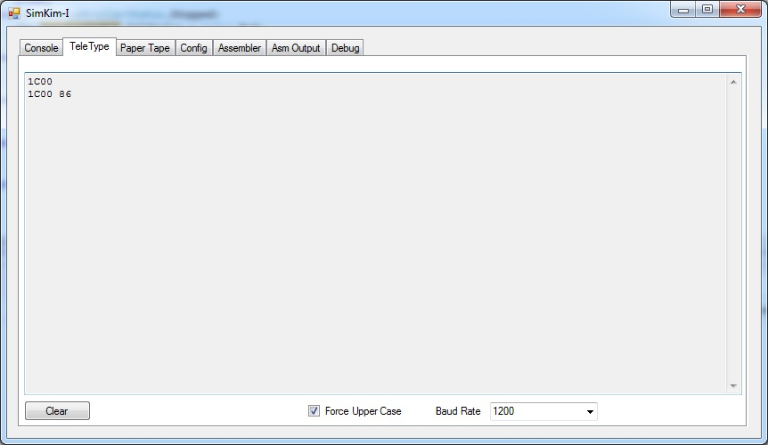
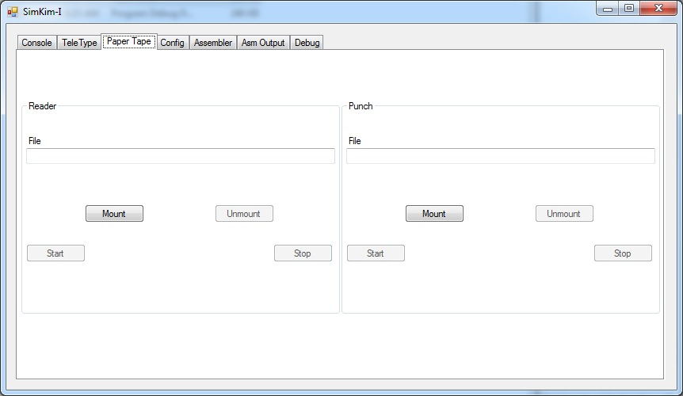
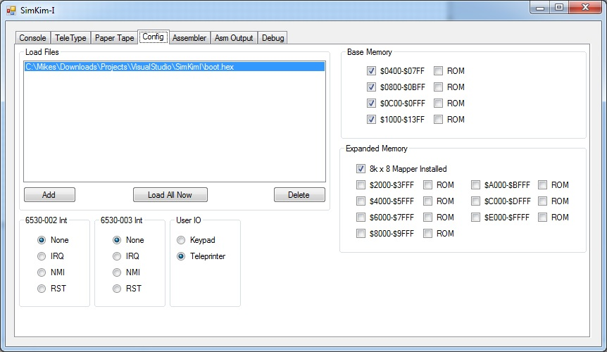
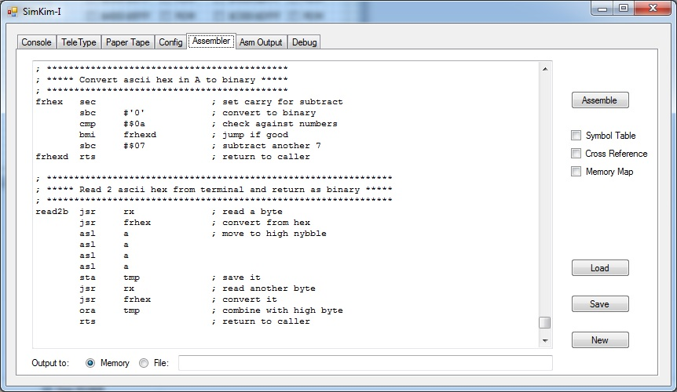
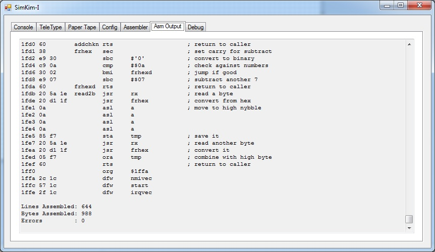
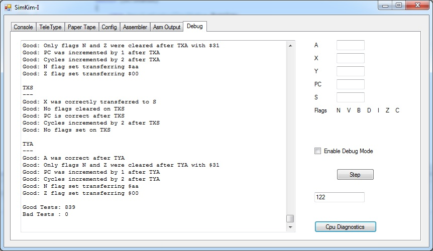

The KIM I was created by MOS Technology, Inc. as a single board computer to help developers get to know their new 6502 microprocessor. This little computer also became popular with hobbyists of the era for its low price ($295) and the fact that it was already assembled and ready to run.
The KIM I in its base configuration contained 1k of RAM, 2k of ROM which held its simple monitor program and 2 IO/Timer chips. The main board contained memory decoding for adding up to 5k of memory. Expansion up to the full 64k of the 6502 was possible using external decoding.
Note: This program requires .net 4.0 framework to be installed






